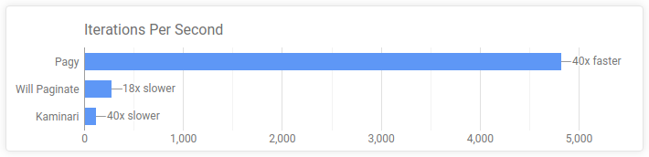
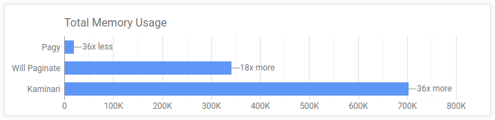
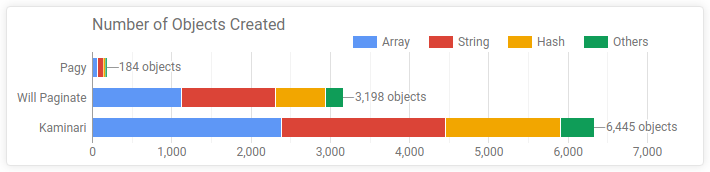
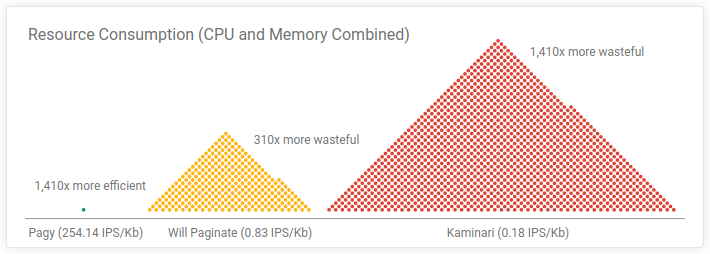
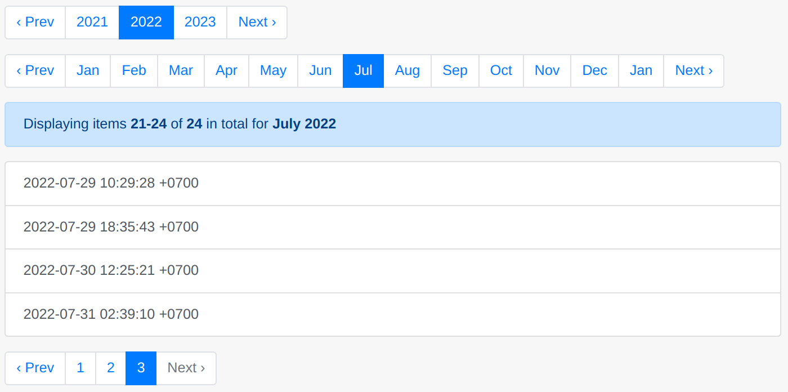
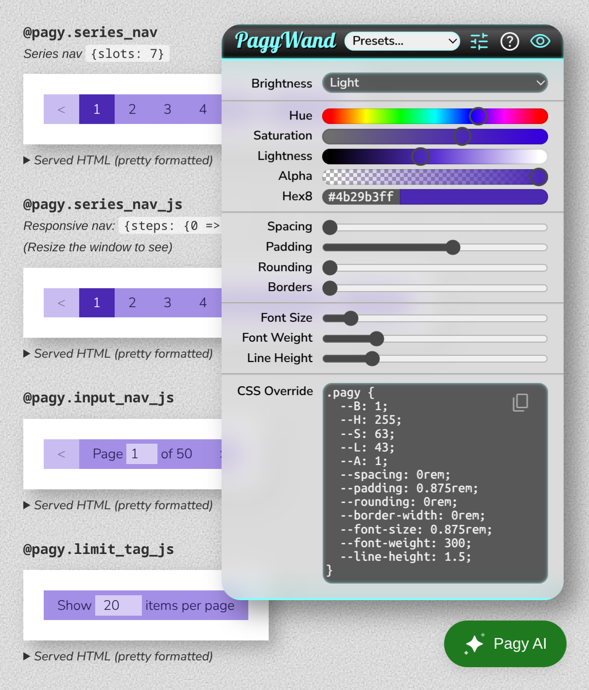

Pagy the leaping gem!
Agnostic pagination in plain ruby

Version 43
We needed a leap version to unequivocally signal that it's not just a major version: it's a complete redesign of the legacy code at all levels, usage and API included.
Why 43? Because it's exactly one step beyond "The answer to the ultimate question of life, the Universe, and everything." 😉
Improvements
This version introduces several enhancements, such as new :countish and :keynav_js paginators and improved automation and configuration processes, reducing setup requirements by 99%. The update also includes a simpler API and new interactive development tools, making it a comprehensive upgrade from previous versions.
- New :countish Paginator
- Faster than OFFSET and supporting the full UI
- New Keynav Pagination
- The pagy-exclusive technique using the fastest keyset pagination alongside all frontend helpers.
- New interactive dev-tools
- New PagyWand to integrate the pagy CSS with your app themes.
- New Pagy AI available right inside your own app.
- Intelligent automation
- Configuration requirements reduced by 99%.
- Simplified JavaScript setup.
- Automatic I18n loading.
- Simpler API
- You solely need the pagy method and the @pagy instance to paginate any collection and use any navigation tag and helper.
- Methods are autoloaded only if used, and consume no memory otherwise.
- Methods have narrower scopes and can be overridden without deep knowledge.
- New documentation
- Very concise, straightforward, and easy to navigate and understand.
Upgrade to 43
See the Upgrade Guide
Take a look at the
💚 v3 was already quite good...
   
💚 Now it's more... with less
- Compatible with all environments and collection types
- It can use OFFSET, COUNTISH, COUNTLESS, KEYSET, KEYNAV, SEARCH, CALENDAR, pagination techniques
- It supports server-side rendering or faster client-side rendering for popular CSS frameworks and APIs
- It autoloads ONLY the methods that you actually use, with almost zero configuration
- It boasts 100% test coverage for Ruby, HTML, and JavaScript end-to-end (E2E)
💚 Examples
Pagination code
# Include pagy in your code (usually application_controller.rb)
include Pagy::Method
# Offset-based pagination
@pagy, @records = pagy(:offset, Product.all)
# Keyset-based pagination (fastest technique)
@pagy, @records = pagy(:keyset, Product.order(my_order).all)
# Paginate your collection with one of several paginators
@pagy, @records = pagy(...)See all the available paginators
JSON:API pagination
# JSON:API nested query string. E.g.: ?page[number]=2&page[size]=100
@pagy, @records = pagy(:offset, Product.all, jsonapi: true)
@pagy, @records = pagy(:keyset, Product.order(my_order).all, jsonapi: true)
render json: { links: @pagy.urls_hash, data: @records }JSON-client pagination
render json: { pagy: @pagy.data_hash, data: @records }Search server pagination
Available paginators: :elasticsearch_rails, :meilisearch, :searchkick, :typesense_rails
# Extend your models (e.g. application_record.rb)
extend Pagy::Search
# Paginate with pagy:
search = Product.pagy_search(params[:q])
@pagy, @response = pagy(:a_search_paginator, search)
# Or get pagy from paginated results:
@results = Product.search(params[:q])
@pagy = pagy(:a_search_paginator, @results)Calendar pagination
Combine time-range and offset pagination.
(Available time units: year, quarter, month, week, and day)

@calendar, @pagy, @records = pagy(:calendar, collection, year: {}, month: {}, offset: {})<%== @calendar[:year].series_nav(:bootstrap) %>
<%== @calendar[:month].series_nav(:bootstrap) %>
<%== @pagy.info_tag %>
...
<%== @pagy.series_nav(:bootstrap) %>Server side rendering
series_nav
Default :pagy, :bootstrap and :bulma styles shown.


Client side rendering
# pagy.rb initializer
javascript_dir = Rails.root.join('app/javascripts')
Pagy.sync_javascript(javascript_dir, 'pagy.mjs') if Rails.env.development?series_nav_js
Faster and responsive
Dynamically fills the container width.
input_nav_js
Fastest! Combines navigation and info in minimum space.
💚 Dev Tools
Integrate pagy with your app's themes interactively (watch demo), and ask specific questions to the Pagy AI right in your app! You need only a single line in your page/layout head to get the Pagy Wand and the Pagy AI:
<%== Pagy.dev_tools %>
💚 Support and Docs
- Quick Start
- How To (quick recipes)
- Migrate from WillPaginate and Kaminari (practical guide)
- Discussions
- Issues
- Changelog
Top 💯 Contributors
💚 Credits
Special thanks to:
- Ben Koshy for his contributions to the documentation, user support and interaction with external frameworks
- JetBrains for their free OpenSource license.
- The Stargazers for showing their support
💚 Repository Info
See Contributing
- Pagy follows the Semantic Versioning 2.0.0. Please check the Changelog for breaking changes introduced by major versions. Using pessimistic version constraint in your Gemfile will ensure smooth upgrades.
- The
masterbranch is the latest rubygem-published release. It also contains docs and comment changes that don't affect the published code. It is never force-pushed. - The
devbranch is the development branch with the new code that will be merged in the next release. It could be force-pushed. - Expect any other branch to be internal, experimental, force-pushed, rebased and/or deleted even without merging.